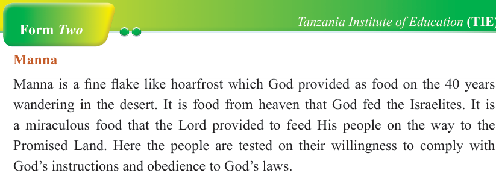
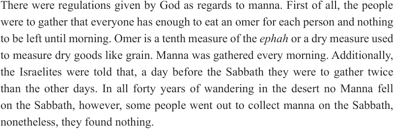
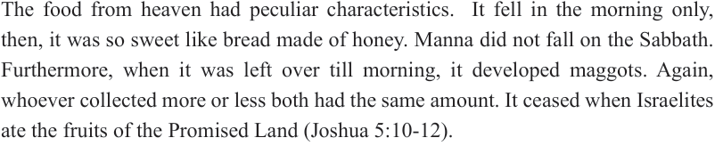
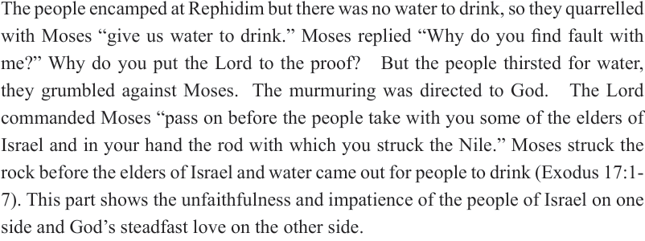

Form Two
Tanzania Institute of Education (TIE)


Bible Knowledge
22



Manna
Manna is a fine flake like hoarfrost which God provided as food on the 40 years wandering in the desert. It is food from heaven that God fed the Israelites. It is a miraculous food that the Lord provided to feed His people on the way to the
Promised Land. Here the people are tested on their willingness to comply with
God’s instructions and obedience to God’s laws.
Regulations regarding manna
There were regulations given by God as regards to manna. First of all, the people were to gather that everyone has enough to eat an omer for each person and nothing to be left until morning. Omer is a tenth measure of the ephah or a dry measure used to measure dry goods like grain. Manna was gathered every morning. Additionally, the Israelites were told that, a day before the Sabbath they were to gather twice than the other days. In all forty years of wandering in the desert no Manna fell on the Sabbath, however, some people went out to collect manna on the Sabbath, nonetheless, they found nothing.
Strange attributes of manna
The food from heaven had peculiar characteristics. It fell in the morning only, then, it was so sweet like bread made of honey. Manna did not fall on the Sabbath.
Furthermore, when it was left over till morning, it developed maggots. Again, whoever collected more or less both had the same amount. It ceased when Israelites ate the fruits of the Promised Land (Joshua 5:10-12).
Lack of water at Rephidim
The people encamped at Rephidim but there was no water to drink, so they quarrelled with Moses “give us water to drink.” Moses replied “Why do you find fault with me?” Why do you put the Lord to the proof? But the people thirsted for water, they grumbled against Moses. The murmuring was directed to God. The Lord commanded Moses “pass on before the people take with you some of the elders of
Israel and in your hand the rod with which you struck the Nile.” Moses struck the rock before the elders of Israel and water came out for people to drink (Exodus 17:1-7). This part shows the unfaithfulness and impatience of the people of Israel on one side and God’s steadfast love on the other side.